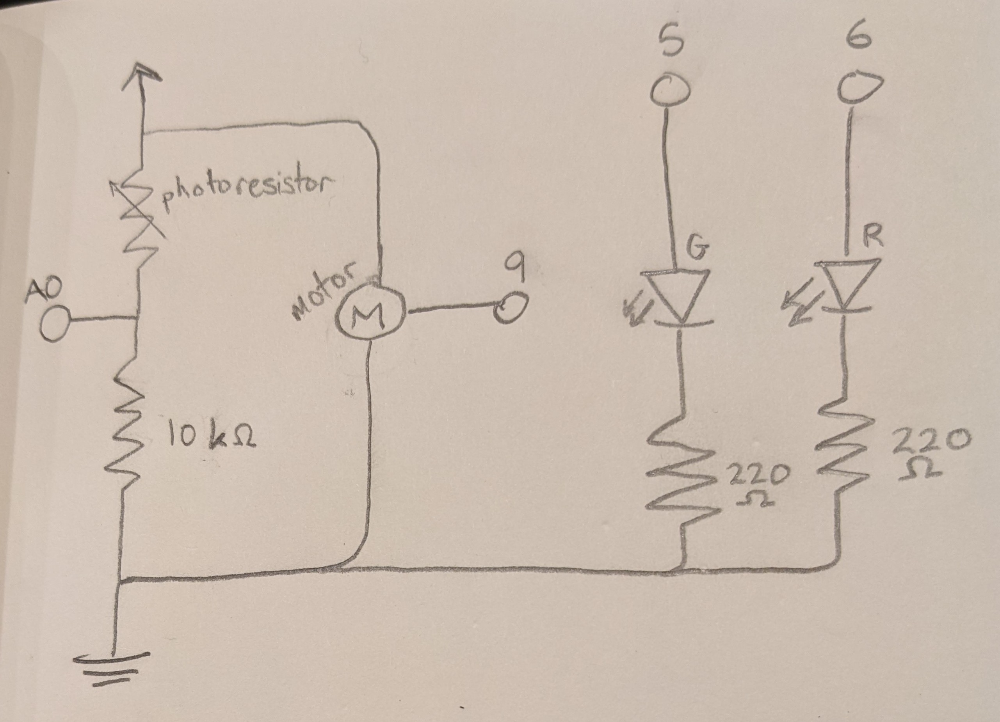
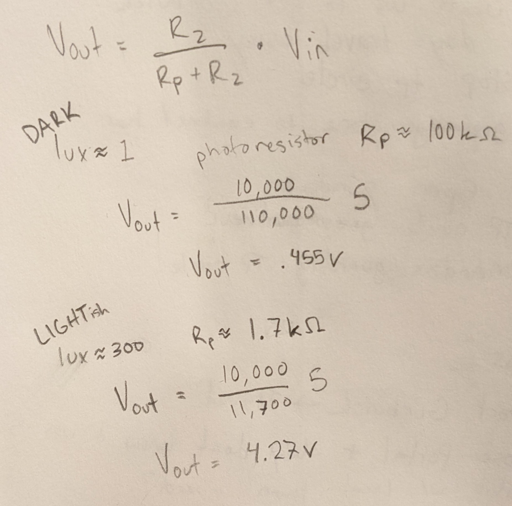
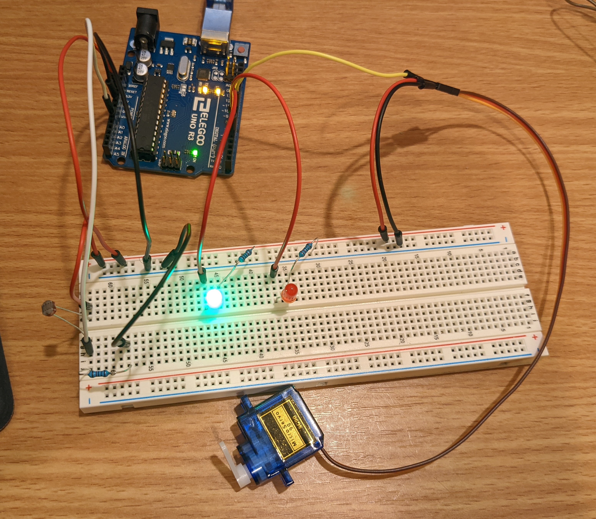
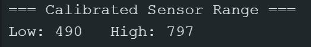
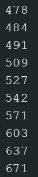

The Arduino reads in the voltage from a voltage divider with a photoresistor. The read values determine the brightness of a green LED on pin 5 and the position of a servo motor with pin 9. A red LED is connected to pin 6 to indicate a calibration period on startup.The LEDs each need a minimum of 160 ohms to limit current to 2mA. I used 220 ohms for each because it was easier and a bit more resistance is fine.

A 10k ohm resistor (R2) is used in the voltage divider along with the photoresistor (Rp). On a dark night with only 1 lux, the photoresistor would contribute roughly 100k ohms and the voltage read by analog input would be about 0.455V. In a lit classroom with up to 300 lux, the photoresistor would contribute about 1.7k ohms and the analog input would read about 4.27V. The 10k ohm value for R2 gives the voltage divider a decent resolution for the expected lux range.
Circuit in Action

Here it is.I cover the photoresistor to decrease its lux reading and increase its resistance. The green LED shines brighter in the dark, and the servo motor's position changes with the light level.

The serial monitor records the calibrated range for the analog input on startup. As the system continues to run, it prints out incoming read values before they're constrained.

/*
File: a3IO.ino
Author: Max Coppock
with some help from the Calibration example:
https://www.arduino.cc/en/Tutorial/BuiltInExamples/Calibration
*/
//include servo library so we can do things with the servo motor
#include <Servo.h>
//define voltage divider sensor pin
const int sensorPin = A0;
//define pin for night light LED (green)
const int nightLED = 5;
//define pin for LED showing active calibration (red)
const int calibratingLED = 6;
//value of sensor pin
int sensorValue = 0;
//variable to hold minimum value during calibration period
// set to 1023 first because this is the max value we can read, so anything
// lower will set a new minimum
int sensorMin = 1023;
//variable to hold maximum value during calibration
// set to minimum value of 0 first so any value will set a new max
int sensorMax = 0;
//servo object for the motor
Servo myServo;
void setup() {
// put your setup code here, to run once:
//set LED pins to output
pinMode(nightLED, OUTPUT);
pinMode(calibratingLED, OUTPUT);
//attach the servo to the servo object in code
myServo.attach(9);
//start serial monitor w 9600 baud rate
Serial.begin(9600);
//CALIBRATION CODE
//turn on calibrating LED to show calibration in progress
digitalWrite(calibratingLED, HIGH);
//spend the first 5 seconds in this loop to calibrate
while (millis() < 5000) {
//save the sensorPin's input to sensorValue
sensorValue = analogRead(sensorPin);
// if there's a new maximum sensor value
if (sensorValue > sensorMax) {
//save it to sensorMax
sensorMax = sensorValue;
}
// if there's a new minimum value
if (sensorValue < sensorMin) {
//save it to sensorMin
sensorMin = sensorValue;
}
}
//turn calibration indicator LED off
digitalWrite(calibratingLED, LOW);
//CALIBRATION DONE
//print out the minimum and maximum values during the calibration
Serial.println("=== Calibrated Sensor Range ===");
Serial.print("Low: ");
Serial.print(sensorMin);
Serial.print(" High: ");
Serial.println(sensorMax);
}
void loop() {
// put your main code here, to run repeatedly:
//save the sensor input to val variable
int val = analogRead(A0);
//print out the saved sensor input
Serial.println(val);
//constrain val to be within the calibrated range
val = constrain(val, sensorMin, sensorMax);
//map val to be used for an analogWrite to an LED
//at 220/255 brightness in low light, off in high light
int valLED = map(val, sensorMin, sensorMax, 220, 0);
//map val to be used for an analogWrite to the servo
//at 0 degrees in low light, 180 in high light
int valServo = map(val, sensorMin, sensorMax, 0, 180);
//write the LED value to the night light LED
analogWrite(nightLED, valLED);
//write the servo value to the servo
myServo.write(valServo);
}